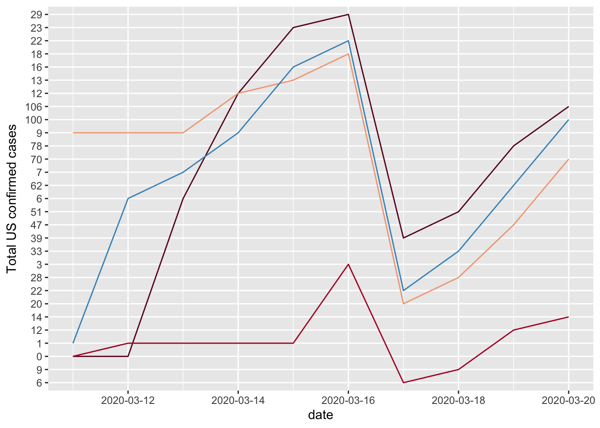
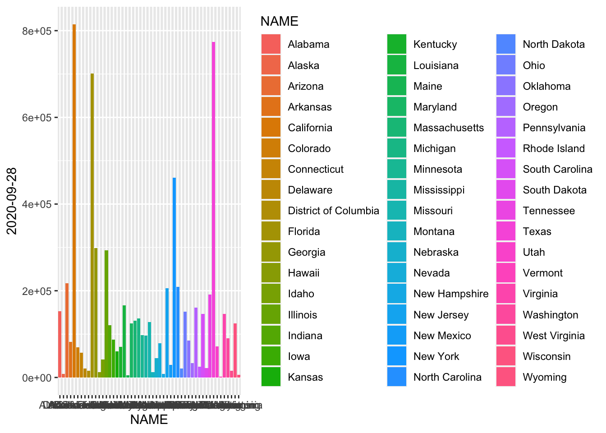
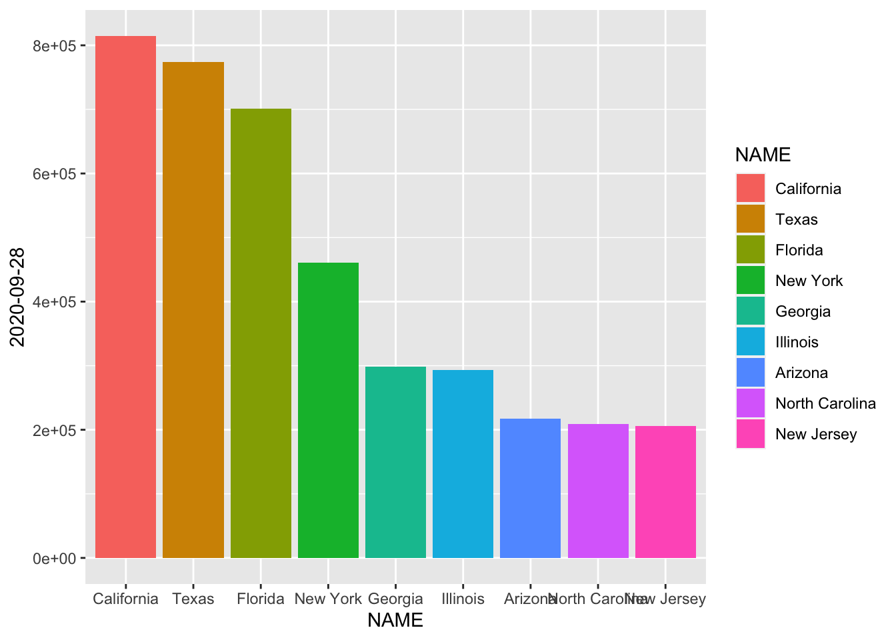

Midterm
Ruowen Wang
10/8/2020
Introduction:
Introduction:
Question: I am trying to find the association between the social distance index with the incidence rate of COVID-19. To check whether keeping social distance is an effective way to slow down the spread of COVID-19.
Explanation: The social distance index is an integer from 0~100 that represents the extent residents and visitors are practicing social distancing. “0” indicates no social distancing is observed in the community, while “100” indicates all residents are staying at home and no visitors are entering the county.Calculated by MTI.
Methods:
Data source: Social distance index: https://dataverse.harvard.edu/dataset.xhtml?persistentId=doi:10.7910/DVN/ZAKKCE Total US confirmed cases: https://dataverse.harvard.edu/dataset.xhtml?persistentId=doi:10.7910/DVN/HIDLTK
I find out the number of columns and rows of both data set. Then I delete the extra columns and rows, focus on the same period.
Preliminary Results:
Please see Step 4.
Code:
## ── Attaching packages ────────────────────────────────────────────────────────────────────────── tidyverse 1.3.0 ──## ✓ ggplot2 3.3.2 ✓ purrr 0.3.4
## ✓ tibble 3.0.3 ✓ dplyr 1.0.1
## ✓ tidyr 1.1.1 ✓ stringr 1.4.0
## ✓ readr 1.3.1 ✓ forcats 0.5.0## ── Conflicts ───────────────────────────────────────────────────────────────────────────── tidyverse_conflicts() ──
## x dplyr::between() masks data.table::between()
## x dplyr::filter() masks stats::filter()
## x dplyr::first() masks data.table::first()
## x dplyr::lag() masks stats::lag()
## x dplyr::last() masks data.table::last()
## x purrr::transpose() masks data.table::transpose()##
## Attaching package: 'scales'## The following object is masked from 'package:purrr':
##
## discard## The following object is masked from 'package:readr':
##
## col_factorStep1: Read in data.
Step3: Delete the extra columns. I want to see the data of the same period in both data set. So I keep the period from Jan/21/2020 to Sep/28/2020.
## [1] 51 254## [1] 51 254## Warning in brewer.pal(n = 15, name = "RdBu"): n too large, allowed maximum for palette RdBu is 11
## Returning the palette you asked for with that many colors
Step4: Get the statistic about the dataframe sid1.
## Alabama Alaska Arizona Arkansas California
## Min. :10.00 Min. :15.00 Min. :13.00 Min. :11.00 Min. :13.0
## 1st Qu.:19.00 1st Qu.:20.75 1st Qu.:28.00 1st Qu.:17.75 1st Qu.:33.0
## Median :24.50 Median :27.00 Median :33.50 Median :22.50 Median :38.0
## Mean :26.83 Mean :30.82 Mean :33.46 Mean :25.37 Mean :38.9
## 3rd Qu.:33.00 3rd Qu.:39.00 3rd Qu.:41.00 3rd Qu.:31.25 3rd Qu.:47.0
## Max. :75.00 Max. :73.00 Max. :70.00 Max. :68.00 Max. :78.0
## Colorado Connecticut Delaware District of Columbia
## Min. :12.00 Min. :13.0 Min. :13.00 Min. :20.00
## 1st Qu.:22.75 1st Qu.:25.0 1st Qu.:24.00 1st Qu.:52.50
## Median :28.50 Median :33.0 Median :30.00 Median :60.00
## Mean :31.32 Mean :35.3 Mean :33.08 Mean :55.17
## 3rd Qu.:38.25 3rd Qu.:44.0 3rd Qu.:41.00 3rd Qu.:64.25
## Max. :80.00 Max. :81.0 Max. :76.00 Max. :81.00
## Florida Georgia Hawaii Idaho
## Min. :12.00 Min. :12.00 Min. :13.00 Min. :13.00
## 1st Qu.:28.00 1st Qu.:22.00 1st Qu.:35.00 1st Qu.:19.00
## Median :35.00 Median :29.00 Median :46.00 Median :23.00
## Mean :35.94 Mean :30.75 Mean :44.54 Mean :25.91
## 3rd Qu.:44.00 3rd Qu.:38.00 3rd Qu.:56.00 3rd Qu.:31.00
## Max. :78.00 Max. :78.00 Max. :83.00 Max. :67.00
## Illinois Indiana Iowa Kansas
## Min. :14.00 Min. :13.00 Min. :12.00 Min. :12.00
## 1st Qu.:23.00 1st Qu.:19.00 1st Qu.:19.00 1st Qu.:21.00
## Median :28.00 Median :23.00 Median :23.00 Median :25.00
## Mean :32.81 Mean :27.39 Mean :26.56 Mean :28.72
## 3rd Qu.:41.00 3rd Qu.:33.00 3rd Qu.:32.25 3rd Qu.:35.25
## Max. :79.00 Max. :73.00 Max. :77.00 Max. :78.00
## Kentucky Louisiana Maine Maryland
## Min. :13.00 Min. :11.00 Min. :13.00 Min. :12.00
## 1st Qu.:19.00 1st Qu.:22.75 1st Qu.:19.00 1st Qu.:32.00
## Median :24.00 Median :30.00 Median :24.00 Median :38.00
## Mean :27.58 Mean :32.11 Mean :27.21 Mean :38.87
## 3rd Qu.:34.00 3rd Qu.:41.00 3rd Qu.:33.00 3rd Qu.:47.00
## Max. :73.00 Max. :77.00 Max. :69.00 Max. :80.00
## Massachusetts Michigan Minnesota Mississippi
## Min. :14.00 Min. :13.00 Min. :12.00 Min. :10.00
## 1st Qu.:27.00 1st Qu.:22.00 1st Qu.:21.00 1st Qu.:18.00
## Median :34.00 Median :28.00 Median :26.50 Median :24.00
## Mean :37.54 Mean :33.13 Mean :30.02 Mean :26.43
## 3rd Qu.:48.25 3rd Qu.:40.25 3rd Qu.:37.25 3rd Qu.:33.00
## Max. :81.00 Max. :80.00 Max. :82.00 Max. :75.00
## Missouri Montana Nebraska Nevada
## Min. :12.00 Min. :14.00 Min. :12.00 Min. :14.00
## 1st Qu.:19.75 1st Qu.:19.00 1st Qu.:20.00 1st Qu.:28.00
## Median :23.00 Median :23.50 Median :23.00 Median :34.00
## Mean :27.39 Mean :26.27 Mean :27.23 Mean :35.73
## 3rd Qu.:33.25 3rd Qu.:31.00 3rd Qu.:34.00 3rd Qu.:43.00
## Max. :74.00 Max. :68.00 Max. :80.00 Max. :74.00
## New Hampshire New Jersey New Mexico New York
## Min. :12.00 Min. :14.00 Min. :12.00 Min. :17.00
## 1st Qu.:19.00 1st Qu.:29.00 1st Qu.:23.75 1st Qu.:35.00
## Median :25.00 Median :39.00 Median :29.00 Median :43.00
## Mean :28.60 Mean :40.55 Mean :30.07 Mean :43.92
## 3rd Qu.:35.25 3rd Qu.:51.25 3rd Qu.:37.00 3rd Qu.:53.25
## Max. :77.00 Max. :83.00 Max. :68.00 Max. :82.00
## North Carolina North Dakota Ohio Oklahoma
## Min. :11.00 Min. :13.00 Min. :13.00 Min. :11.00
## 1st Qu.:21.00 1st Qu.:18.00 1st Qu.:21.00 1st Qu.:18.00
## Median :27.00 Median :21.50 Median :25.50 Median :22.00
## Mean :29.05 Mean :25.93 Mean :29.55 Mean :25.17
## 3rd Qu.:36.00 3rd Qu.:31.00 3rd Qu.:37.00 3rd Qu.:31.00
## Max. :73.00 Max. :75.00 Max. :75.00 Max. :70.00
## Oregon Pennsylvania Rhode Island South Carolina South Dakota
## Min. :14.00 Min. :14.00 Min. :13.0 Min. :11.00 Min. :12.00
## 1st Qu.:24.00 1st Qu.:25.00 1st Qu.:22.0 1st Qu.:20.00 1st Qu.:17.00
## Median :31.00 Median :31.00 Median :28.0 Median :25.00 Median :21.00
## Mean :33.15 Mean :34.28 Mean :32.7 Mean :27.71 Mean :24.42
## 3rd Qu.:41.00 3rd Qu.:42.00 3rd Qu.:41.0 3rd Qu.:34.00 3rd Qu.:29.00
## Max. :71.00 Max. :77.00 Max. :78.0 Max. :74.00 Max. :77.00
## Tennessee Texas Utah Vermont Virginia
## Min. :12.00 Min. :11.0 Min. :12.00 Min. :12.00 Min. :12.00
## 1st Qu.:18.00 1st Qu.:24.0 1st Qu.:21.00 1st Qu.:21.00 1st Qu.:27.00
## Median :23.00 Median :31.0 Median :26.00 Median :26.00 Median :33.00
## Mean :26.23 Mean :31.8 Mean :29.53 Mean :30.37 Mean :34.37
## 3rd Qu.:32.00 3rd Qu.:39.0 3rd Qu.:38.25 3rd Qu.:39.00 3rd Qu.:43.00
## Max. :76.00 Max. :73.0 Max. :74.00 Max. :74.00 Max. :73.00
## Washington West Virginia Wisconsin Wyoming
## Min. :13.00 Min. :14.00 Min. :12.00 Min. :14.00
## 1st Qu.:26.00 1st Qu.:20.00 1st Qu.:19.00 1st Qu.:18.00
## Median :32.00 Median :25.00 Median :23.50 Median :21.00
## Mean :34.57 Mean :28.48 Mean :27.84 Mean :24.23
## 3rd Qu.:42.00 3rd Qu.:34.25 3rd Qu.:33.25 3rd Qu.:29.00
## Max. :74.00 Max. :70.00 Max. :76.00 Max. :69.00- I also to bulid the kable format table for the mean information of the first 6 states:“Alabama”, “Alaska”, “Arizona”, “Arkansas”, “California”, “Colorado”.
| statistic information | Alabama | Alaska | Arizona | Arkansas | California | Colorado |
|---|---|---|---|---|---|---|
| mean | 26.83 | 20.82 | 33.46 | 25.37 | 38.9 | 31.32 |
- We can see the range of social distance doesn’t fluctuate much in these states.
Step5: Check the missing values in both data set.
## [1] 0## [1] 0Step6: Draw the barchart of total US confirmed cases on Sep/28/2020.

Step7: Find which states have the total confirmed cases on Sep/28/2020 which are over 200,000.

Step8: Compare the social distance index with the total confirmed cases in the states which are over 200,000.

- From the following biaxial chart, in the 9 states with more than 200,000 confirmed infected people. If we set the social distance lager than 35 as the long social distance Here are 4 states follow patterns are shown: those with fewer infected people have a longer social distance, such as New York and New Jersey; the number of infected people is higher in states with shorter social distance, such as California, Florida and Texas.
Conclusions:
- Social distance is not an absolute influence on the number of people diagnosed.
- The range of social distance doesn’t fluctuate much in these states.
- The total confirmed cases and the mean social distance are not related.
- Although this conclusion is surprising me, I think we still need to focus on keeping social distance, because New York and New Jersey are two states have high population density, but with quite low confirmed cases numbers, we can also see that the social distance indexes of these two states are the highest two numbers in the plot. Maybe keeping a social distance is more efficient in big cities than in rural areas. Therefore, as the states with the same high population density, California and Texas should keep social distance and see if that can slow down the spread of Covid-19.